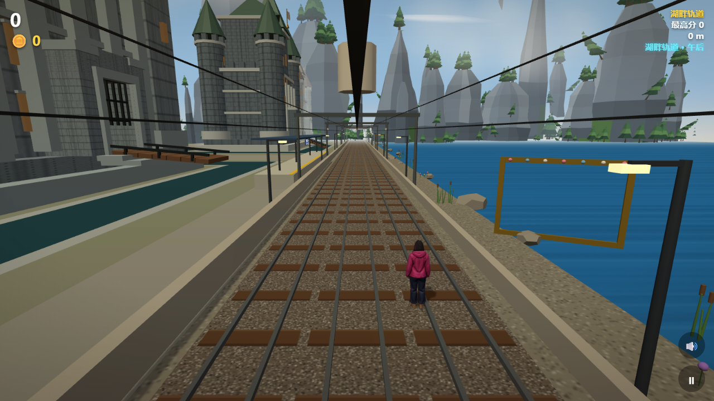
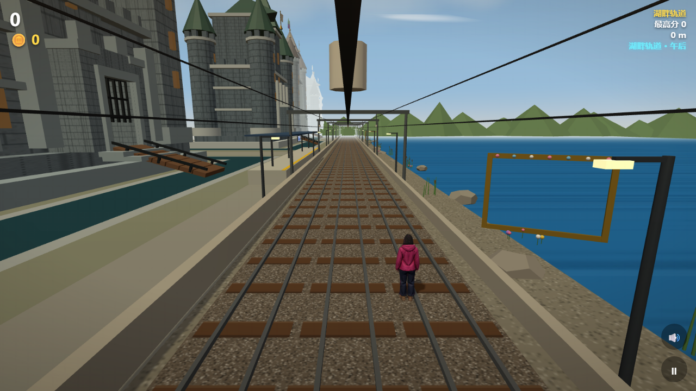
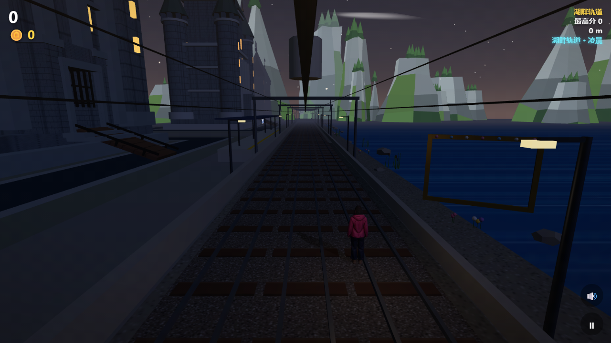
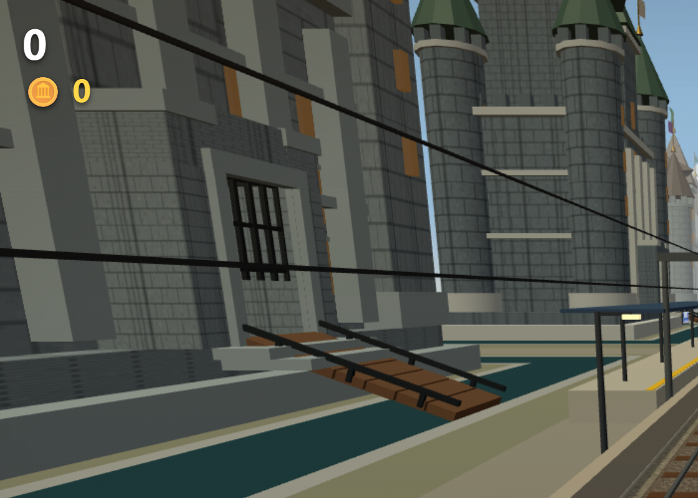
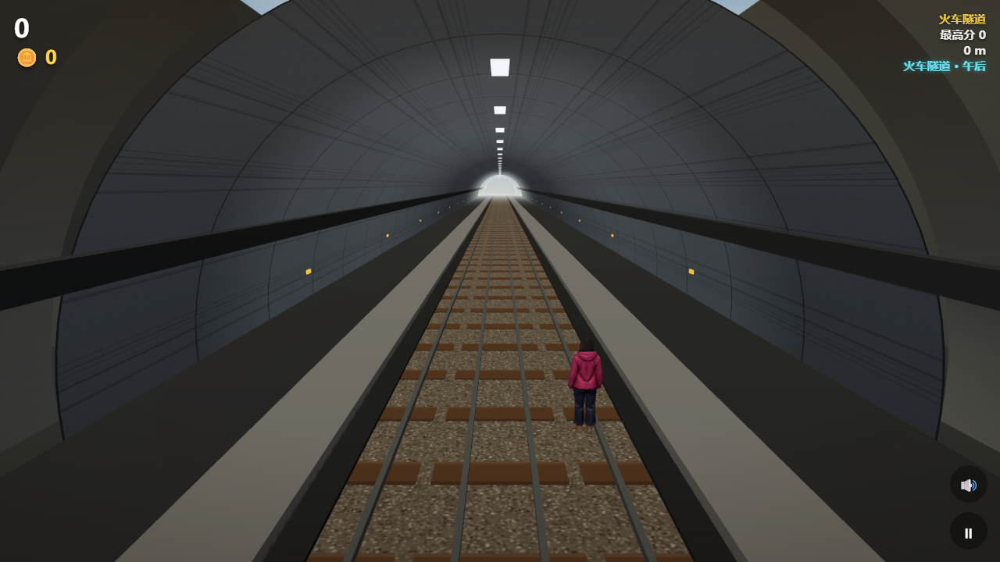
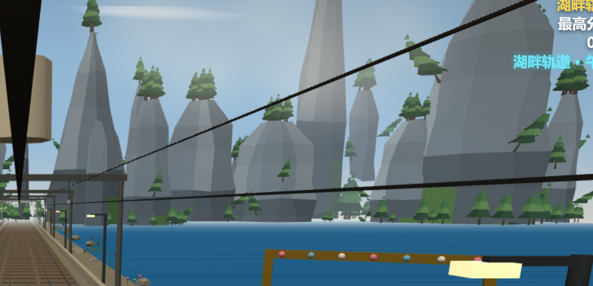

类似地铁跑酷的 3D 网页跑酷游戏。五张地图轮转、天气交替、地标建模、双人对战 —— 全部塞进一个 HTML 文件里。
在线版已针对手机优化：资源并行加载、带进度提示、重开走缓存；建议 Chrome / Edge 89+ 或 Safari 16.4+
2026-11-06 最新一轮美术：群山、护城河、隧道与校园地标。

群山 · 陡峭版全景
湖畔 · 护城河
群山 · 夜景
城门 · 局部
隧道 · 随机洞长
群山 · 树冠特写不是「一个网页 + 一堆资源」，而是真的把所有东西编译进了一个文件。
7 座地标 GLB、角色、保安、校园底板以及 three.js 本身全部内联。file:// 双击直接跑，断网、没服务器都不影响。
校园底板改用 gzip + base64，运行时用浏览器原生 DecompressionStream 解压再交给 GLTFLoader，16.7 MB 压到 3.8 MB。
按设备性能自动降级，也能用 ?q=low 强制低画质。浏览器不支持 importmap 时会显示中文提示，而不是白屏。
tests/ 51 项自检，tools/ 里有内联打包、生成内测版、截图、性能采集等全套脚本，README 是完整的开发日志。
38MB 成品里 37.5MB 是内联资源，GitHub 不显示这么大的文件。逻辑代码已按分节导出到 src/parts/，每个小于 130KB，能直接高亮阅读；playable.html 本身一个字节没改。
最简单的方式：把仓库 clone 下来，双击 playable.html。
git clone https://github.com/1yanjinhui8/lakeside-parkour-3d.git cd lakeside-parkour-3d start playable.html # Windows # 或者 npm start 起一个本地静态服务器（默认 8765 端口）
playable-beta.html 后双击运行。双人对战时会自动恢复死亡判定。?q=low，或在 ⚙️ 设置面板里切低画质。